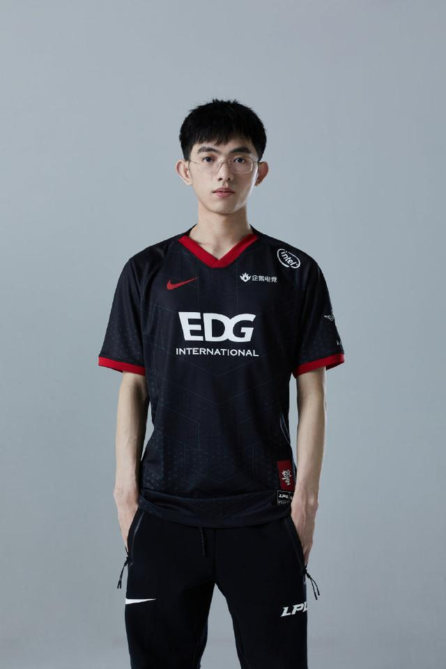
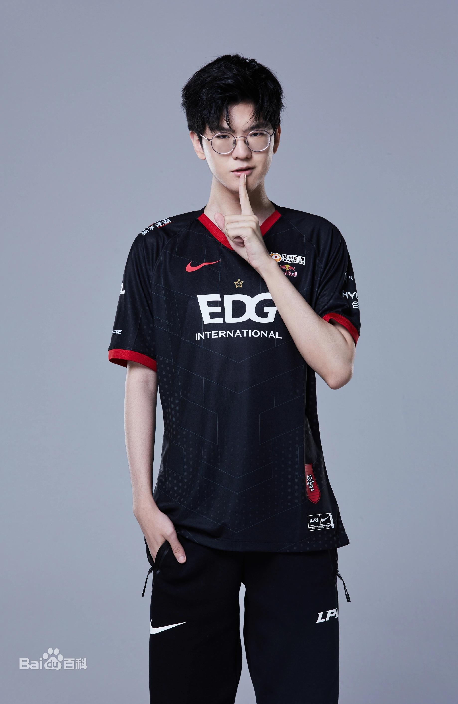
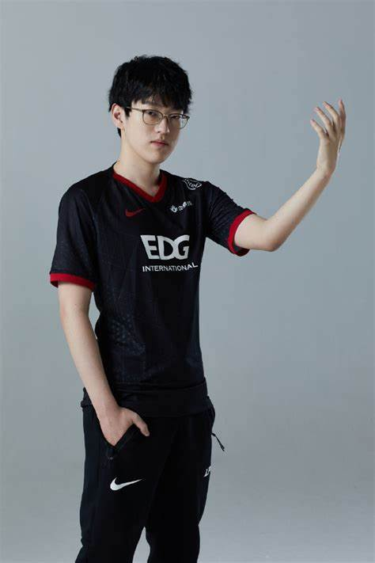
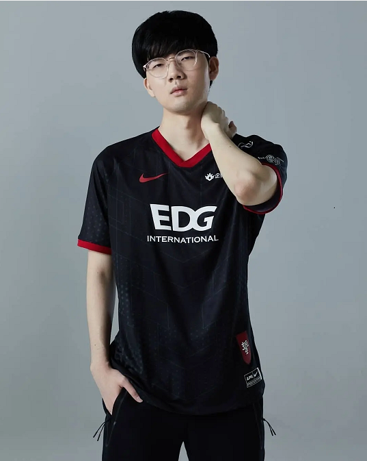
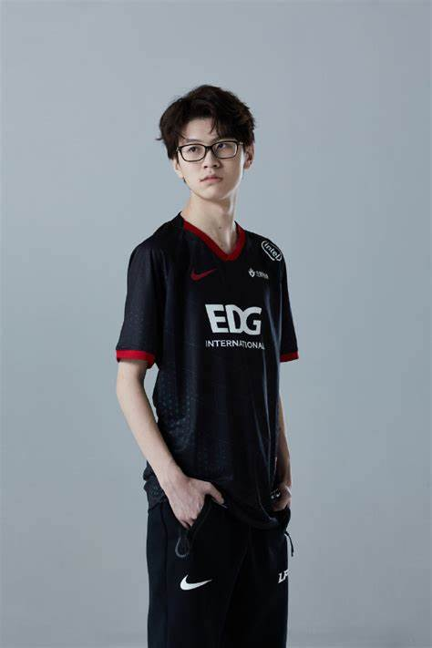

角色介绍
-

李炫君（游戏ID：Flandre），1998年8月28日出生于广东省江门市新会区 ，英雄联盟职业选手， 上单，原LNG电子竞技俱乐部选手，现效力于EDG电子竞技俱乐部。
-

赵礼杰（游戏ID：Jiejie），2001年10月27日出生于湖北省襄阳市 ，《英雄联盟》职业选手，司职打野，效力于EDG电子竞技俱乐部英雄联盟分部。
-

李汭燦（이예찬），游戏ID：Scout，1998年3月14日出生于韩国，韩国英雄联盟职业选手，司职中单，前SKT T1战队选手，现效力于EDG电子竞技俱乐部。
-

朴到贤（游戏ID：Viper），2000年10月19日出生于韩国，韩国英雄联盟职业选手，司职ADC，原GRF（Griffin简写）战队、HLE战队选手，现效力于EDG电子竞技俱乐部。
-

田野（游戏ID：Meiko），1998年6月6日出生于云南省楚雄彝族自治州禄丰市 [37] ，英雄联盟职业选手，司职辅助，前英雄联盟Ray战队的选手，现效力于EDG电子竞技俱乐部。